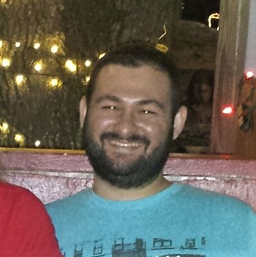

About Me
Creativity is important to me. I spend a lot of time thinking about what I can make, write, or build next. That's why I decided to pursue a career in website development. If I could spend my day flexing my creative brain cells for profit, I don't think I'd ever "work" another day in my life.
I started my coding career tinkering with HTML during my senior year in High School making basic pages. Then at the University of Florida, I spent quite a few hours pouring over Head First Java, learning programming fundamentals while pursuing a digital arts degree. I also learned a little 3d modeling while I was there. Fast forward ten years, I'm back to coding, having championed UCF's coding bootcamp and learning HTML, CSS, Javascript, React, JQuery, SQL and more!
In the interim between studying Java at UF and now, I switched majors to Japanese Language and Literature, and launched down a totally different career path. I studied abroad in Japan for a year, then came home and earned my Bachelors of Arts from UF. After college, I became a firefighter/paramedic for Marion County, Florida for 5 years. I then earned an Associate of Science Degree in Nursing and worked as a Critical Care Registered Nurse for 3 years.
I also enjoy playing guitar, creative writing, riding my bicycle, reading comic books, real books, and manga. Also, long walks on the beach.